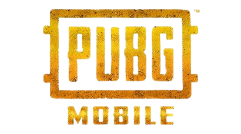
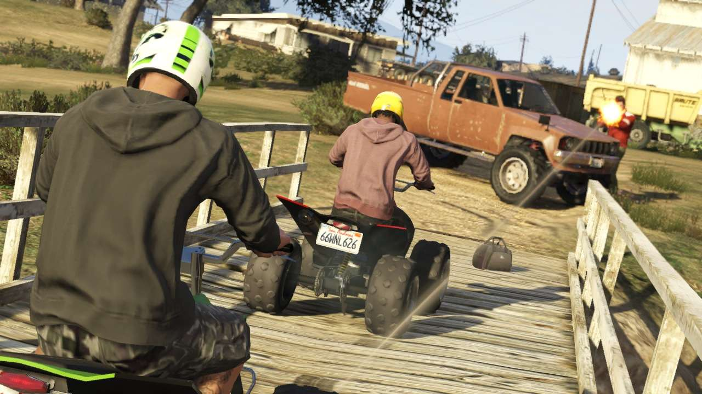
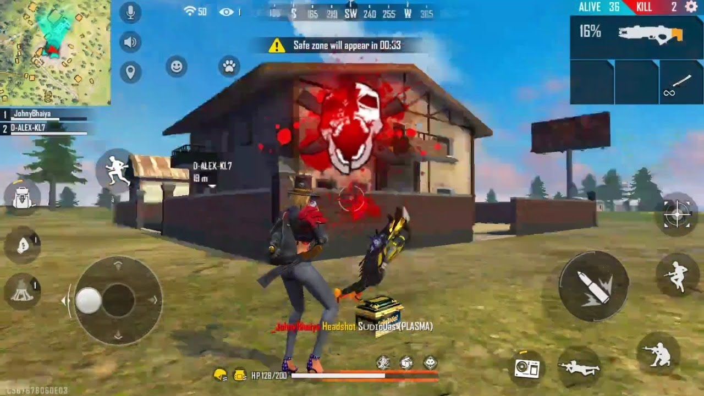

Welcome to TES ONLINE GAMING APP, We are no 1 in the World best online games centre, Where you see the best online games and download them either on mobile phones or PC.
An online game is a video game that is either partially or primarily played through the Internet or any other computer network available.[1] Online games are ubiquitous on modern gaming platforms, including PCs, consoles and mobile devices, and span many genres, including first-person shooters, strategy games, and massively multiplayer online role-playing games (MMORPG).[2] In 2019, revenue in the online games segment reached $16.9 billion, with $4.2 billion generated by China and $3.5 billion in the United States.[3] Since the 2010s, a common trend among online games has been to operate them as games as a service, using monetization schemes such as loot boxes and battle passes as purchasable items atop freely-offered games.[4][5] Unlike purchased retail games, online games have the problem of not being permanently playable, as they require special servers in order to function.
Here are our best top ten online games
.png)


PUBG: Battlegrounds (previously known as PlayerUnknown's Battlegrounds) is a 2017 battle royale game developed by PUBG Studios and published by Krafton. The game, which was inspired by 2000's Japanese film Battle Royale, is based on previous mods created by Brendan "PlayerUnknown" Greene for other games, and expanded into a standalone game under Greene's creative direction. It is the first game in the PUBG Universe series. The game is played from either a third-person or first-person perspective. In the game, up to one hundred players parachute onto an island where they scavenge for weapons and equipment to kill other players while avoiding getting killed themselves. The available safe area of the game's map decreases in size over time, directing surviving players into an ever-tightening space to force encounters. The last surviving player or team wins the round. It was first released for Windows via Steam's early access beta program in March 2017, with a full release in December 2017. The game was also released by Microsoft Studios for the Xbox One via its Xbox Game Preview program that same month, and officially released in September 2018. PUBG Mobile, a free-to-play mobile game version for Android and iOS, was released in 2018, in addition to a port for the PlayStation 4. A version for the Stadia streaming platform was released in April 2020, with Xbox Series X/S and PlayStation 5 versions being released in November 2020. The game has been free-to-play for all platforms since January 12, 2022. The game received positive reviews from critics, who found that while the game had some technical flaws, it presented new types of gameplay that could be easily approached by players of any skill level and was highly replayable. The game was credited with popularizing the battle royale genre, with a number of unofficial Chinese clones also being produced following its success. The game received several Game of the Year nominations and set seven Guinness World Records, among many other accolades. PUBG Corporation has run several small tournaments and introduced in-game tools to help with broadcasting the game to spectators, as they wish for it to become a popular esport. It has sold over 75 million copies on personal computers and game consoles, is the best-selling game on PC and on Xbox One, and is the fifth best-selling video game of all time. Until Q3 2022, the game has accumulated $13 billion in worldwide revenue, including from the more successful mobile version of the game, and it is considered to be one of the highest-grossing video games of all time. Gameplay PUBG is a player versus player shooter game in which up to one hundred players fight in a battle royale, a type of large-scale last man standing deathmatch where players fight to remain the last alive. Players can choose to enter the match solo, duo, or with a small team of up to four people. The last person or team alive wins the match.[1] Each match starts with players parachuting from a plane onto one of the eight maps which have different sizes and terrain.[2] The plane's flight path across the map varies with each round, requiring players to quickly determine the best time to eject and parachute to the ground.[1] Players start with no gear beyond customized clothing selections which do not affect gameplay. Once they land, players can search buildings, ghost towns and other sites to find weapons, vehicles, armor, and other equipment. These items are procedurally distributed throughout the map at the start of a match, with certain high-risk zones typically having better equipment.[1] Killed players can be looted to acquire their gear as well.[1] Players can opt to play either from the first-person or third-person perspective, each having their own advantages and disadvantages in combat and situational awareness; though server-specific settings can be used to force all players into one perspective to eliminate some advantages.[3] Every few minutes, the playable area of the map begins to shrink down towards a random location, with any player caught outside the safe area taking damage incrementally, and eventually being eliminated if the safe zone is not entered in time; in game, the players see the boundary as a shimmering blue wall that contracts over time.[4] This results in a more confined map, in turn increasing the chances of encounters.[1] During the course of the match, random regions of the map are highlighted in red and bombed, posing a threat to players who remain in that area.[5] In both cases, players are warned a few minutes before these events, giving them time to relocate to safety.[6] A plane will fly over various parts of the playable map occasionally at random, or wherever a player uses a flare gun, and drop a loot package, containing items which are typically unobtainable during normal gameplay. These packages emit highly visible red smoke, drawing interested players near it and creating further confrontations.[1][7] On average, a full round takes no more than 30 minutes.[6] At the completion of each round, players gain in-game currency based on their performance. The currency is used to purchase crates which contain cosmetic items for character or weapon customization.[8] A rotating "event mode" was added to the game in March 2018. These events change up the normal game rules, such as establishing larger teams or squads, or altering the distribution of weapons and armor across the game map.[9] Development Game creator Brendan "PlayerUnknown" Greene in 2018 The game's concept and design was led by Brendan Greene, better known by his online handle PlayerUnknown, who had previously created the ARMA 2 mod DayZ: Battle Royale, an offshoot of popular mod DayZ, and inspired by the 2000 Japanese film Battle Royale.[10][11] At the time he created DayZ: Battle Royale, around 2013, Irish-born Greene had been living in Brazil for a few years as a photographer, graphic designer, and web designer, and played video games such as Delta Force: Black Hawk Down and America's Army.[12][13] The DayZ mod caught his interest, both as a realistic military simulation and its open-ended gameplay, and he started playing around with a custom server, learning programming as he went along.[12] Greene found most multiplayer first-person shooters too repetitive, considering maps small and easy to memorize. He wanted to create something with more random aspects so that players would not know what to expect, creating a high degree of replayability; this was done by creating vastly larger maps that could not be easily memorized, and using random item placement across it.[14] Greene was also inspired by an online competition for DayZ called Survivor GameZ, which featured a number of Twitch and YouTube streamers fighting until only a few were left; as he was not a streamer himself, Greene wanted to create a similar game mode that anyone could play.[14] His initial efforts on this mod were more inspired by The Hunger Games novels, where players would try to vie for stockpiles of weapons at a central location, but he moved away from this partially to give players a better chance at survival by spreading weapons around, and also to avoid copyright issues with the novels.[11] In taking inspiration from the Battle Royale film, Greene had wanted to use square safe areas, but his inexperience in coding led him to use circular safe areas instead, which persisted to Battlegrounds.[11] When DayZ became its own standalone title, interest in his ARMA 2 version of the Battle Royale mod trailed off, and Greene transitioned development of the mod to ARMA 3.[12] Sony Online Entertainment (now the Daybreak Game Company) had become interested in Greene's work, and brought him on as a consultant to develop on H1Z1, licensing the battle royale idea from him.[12] In February 2016, Sony Online split H1Z1 into two separate games, the survival mode H1Z1: Just Survive, and the battle royale-like H1Z1: King of the Kill, around the same time that Greene's consultation period was over.[15] Separately, the Seoul-based studio Ginno Games, led by Chang-han Kim and who developed massively multiplayer online games (MMOs) for personal computers, was acquired and renamed Bluehole Ginno Games by Bluehole in January 2015, a major South Korean publisher of MMOs and mobile games.[16][17] Kim recognized that producing a successful game in South Korea generally meant it would be published globally, and wanted to use his team to create a successful title for personal computers that followed the same model as other mobile games published by Bluehole. He had already been excited about making a type of battle royale game after he had played DayZ, in part that the format had not caught on in Korea. He also wanted to make this through an early access model and have a very limited development schedule to get the game out as quickly as possible, while treating the product as a "games as a service" model to be able to support it for many years.[16] In researching what had been done, he came across Greene's mods and reached out to him.[16] In July 2017, Bluehole partnered with social media platform Facebook to provide exclusive streaming content to Facebook's gaming channels, as part of their push to provide more gaming content for its users.[18] Around the same time that Greene left Sony Online, Kim contacted and offered him the opportunity to work on a new battle royale concept. Within a week, Greene flew out to Bluehole's headquarters in Korea to discuss the options, and a few weeks later, he became the creative director of Bluehole. He moved to South Korea to oversee development.[14] According to Greene, this was the first time a Korean game studio had brought aboard a foreigner for a creative director role, and while it was a risk, he says that his relationship with Bluehole's management is strong, allowing Greene's team to work autonomously with minimal oversight.[6] The game's main musical theme was composed by Tom Salta, who was personally selected by Greene as he and the team were looking for an "orchestral electronic hybrid theme" that would give players a "huge build-up", keeping them "resolutely determined" until a match starts.[19] The music for 6th anniversary was composed by Antti Martikainen.[20]
Development began in early 2016 and was publicly announced that June, with plans to have the game ready within a year.[21][22] Kim served as executive producer for the game.[14] Bluehole started with a team of about 35 developers supporting Greene's work, but had expanded to 70 by June 2017.[23] Greene stated that many of these developers were voluntarily putting in longer work hours into the game due to their dedication to the project, and not by any mandate from himself or Bluehole's management.[14][24] In addition to Bluehole, Greene also credits Bohemia Interactive, the developers of ARMA and DayZ, for support with motion capture animations via their Prague studio.[24][23] With the rapid growth of interest in the game, Bluehole spun out the entire development for PUBG into Bluehole Ginno Games in September 2017, which was renamed PUBG Corporation with Kim as its chief executive officer. PUBG Corporation continued the development of the game and its marketing and growth, opening an office in the United States with plans for future ones in Europe and Japan.[25] In August 2018, PUBG Corporation launched the "Fix PUBG" campaign, acknowledging that the game by then still had several lingering bugs and other performance issues.[26] The campaign finished in November, with PUBG Corporation calling it a success as everything listed had been implemented by then.[27] In March 2019, Greene announced that he was stepping down as the game's lead designer, but would still serve as a creative consultant. Tae-seok Jang, the game's art director, would replace him, with Green relocating to PUBG's studio in Amsterdam, PUBG Special Projects.[28] Greene stated that he believed the main PUBG team was at a place to continue developing the game in the direction he had set to keep the game unique among the other battle royale games it had launched, and he wanted to try something not tied to battle royale but still multiplayer-based. The move also put him closer to his family in Ireland.[29] With the success of PUBG, Bluehole created Krafton as a holding company for its video game assets and studios in 2018, taking over the publishing duties for PUBG and related games.[30][31] By December 2020, Krafton merged PUBG Corporation into their internal studio system, rebranding the team as PUBG Studios.[32]


Grand Theft Auto (GTA) is an action-adventure video game series created by David Jones and Mike Dailly.[2] Later titles were developed under the oversight of brothers Dan and Sam Houser, Leslie Benzies and Aaron Garbut. It is primarily developed by British development house Rockstar North (formerly DMA Design), and published by its American parent company, Rockstar Games. The name of the series is a term for motor vehicle theft in the United States. Gameplay focuses on an open world where the player can complete missions to progress an overall story, as well as engage in various side activities. Most of the gameplay revolves around driving and shooting, with occasional role-playing and stealth elements. The series also has elements of the earlier beat 'em up games from the 16-bit era. The games in the Grand Theft Auto series are set in fictional locales modelled after real-life cities, at various points in time from the early 1960s to the 2010s. The original game's map encompassed three cities—Liberty City (based on New York City), San Andreas (based on San Francisco),[a] and Vice City (based on Miami)—but later titles tend to focus on a single setting and expand upon the original three locales. Each game in the series centres on different respective protagonist who attempts to rise through the criminal underworld due to various motives, often accompanying themes of betrayal. Several film and music veterans have voiced characters in the games, including Ray Liotta, Dennis Hopper, Samuel L. Jackson, William Fichtner, James Woods, Debbie Harry, Axl Rose and Peter Fonda.[3] DMA Design began the series in 1997, with the release of the Grand Theft Auto. As of 2020, the series consists of seven standalone titles and four expansion packs. The third main title, Grand Theft Auto III, released in 2001, is considered a landmark game, and brought the series into a three-dimensional environment for the first time. Subsequent titles have followed and built upon the format established by Grand Theft Auto III, receiving significant acclaim. The games influenced other open-world games, and led to the label Grand Theft Auto clone on similar titles.[4] The series has been critically acclaimed, with all the main 3D entries in the franchise frequently ranked among the greatest and best-selling video games;[5] it has shipped more than 425 million units, making it one of the best-selling video game franchises. In 2006, Grand Theft Auto was featured in a list of British design icons in the Great British Design Quest organised by the BBC and the Design Museum.[6] In 2013, The Telegraph ranked Grand Theft Auto among Britain's most successful exports.[7] The series has also been controversial for its adult nature and violent themes, as well as for cut content. Series history Main series Release timeline 2D universe 3D universe HD universe[8] 1997 Grand Theft Auto 1998 1999 Grand Theft Auto: London 1969 Grand Theft Auto: London 1961 Grand Theft Auto 2 2000 2001 Grand Theft Auto III 2002 Grand Theft Auto: Vice City 2003 Grand Theft Auto: Double Pack 2004 Grand Theft Auto: San Andreas Grand Theft Auto Advance 2005 Grand Theft Auto: The Trilogy Grand Theft Auto: Liberty City Stories 2006 Grand Theft Auto: Vice City Stories 2007 2008 Grand Theft Auto IV 2009 Grand Theft Auto IV: The Lost and Damned Grand Theft Auto: Chinatown Wars Grand Theft Auto: The Ballad of Gay Tony 2010 2011 2012 2013 Grand Theft Auto V Grand Theft Auto Online 2014 2015 2016 2017 2018 2019 2020 2021 Grand Theft Auto: The Trilogy – The Definitive Edition 2022 2023 2024 2025 Grand Theft Auto VI The Grand Theft Auto series is split into separate fictional universes, named after the primary level of graphics capability used in each era.[8] The original Grand Theft Auto, its expansions and its sequel are considered the "2D universe". Grand Theft Auto III and its sequels are considered the "3D universe". Grand Theft Auto IV, its expansions and Grand Theft Auto V are considered the "HD universe". Each universe is considered separate with only brands, place names and background characters shared between them.[8] Grand Theft Auto, the first game in the series, was released for MS-DOS and Windows in November 1997, ported to the PlayStation in 1998 and the Game Boy Color in 1999. Grand Theft Auto 2 was released in 1999 for Windows, later receiving ports on the PlayStation, Dreamcast and Game Boy Color.[9] The PlayStation 2 also featured three instalments of the main series, all of which have been re-released on several platforms; a deal between Take-Two Interactive and Sony Computer Entertainment resulted in their timed exclusivity on the PlayStation 2, before receiving ports to Windows and the Xbox.[10] The 2001 title Grand Theft Auto III moved away from the two-dimension (2D) graphics used in the first two games to three-dimension (3D) computer graphics[11] Grand Theft Auto: Vice City was published in 2002, and was the first to feature a speaking protagonist, voiced by Ray Liotta.[12] Grand Theft Auto: San Andreas, released in 2004, introduced various new elements, including character customisation and a large map encompassing three cities and surrounding rural area.[13] Two main instalments were published for the PlayStation 3 and Xbox 360. The 2008 title Grand Theft Auto IV focused on realism and detail, removing various customisation features, while adding an online multiplayer mode.[14] Grand Theft Auto V, published in 2013, featured three playable protagonists.[15] It was released to massive financial success, breaking multiple records.[16] It was later re-released with various enhancements, in 2014 for the PlayStation 4 and Xbox One, and in 2015 for Windows;[17] versions for PlayStation 5 and Xbox Series X and S were released in 2022.[18] On 4 February 2022, Rockstar confirmed that development of a new entry in the series was "well underway".[19] In-development footage of the game leaked in September 2022;[20][21] Rockstar noted that it was "extremely disappointed" by the manner in which the game was first demonstrated, but that it did not anticipate long-term effects on development.[22] In December 2023, the game was officially announced as Grand Theft Auto VI, with a projected release date of 2025 for the PlayStation 5 and Xbox Series X/S.[23]

Call of Duty is a military video game series and media franchise published by Activision, starting in 2003. The games were first developed by Infinity Ward, then by Treyarch and Sledgehammer Games. Several spin-off and handheld games were made by other developers. The most recent title, Call of Duty: Modern Warfare III, was released on November 10, 2023. The upcoming title, Call of Duty: Black Ops 6, is scheduled to be released on October 25, 2024.[1] The series originally focused on a World War II setting, with Infinity Ward developing Call of Duty (2003) and Call of Duty 2 (2005) and Treyarch developing Call of Duty 3 (2006). Infinity Ward's Call of Duty 4: Modern Warfare (2007) introduced a modern setting and proved to be the breakthrough title for the series, creating the Modern Warfare sub-series; a Modern Warfare remastered version released in 2016. Two other entries, Modern Warfare 2 (2009) and Modern Warfare 3 (2011), were made. The sub-series received a reboot with Modern Warfare in 2019, Modern Warfare II in 2022, and Modern Warfare III in 2023. Infinity Ward has also developed two games outside of the Modern Warfare sub-series, Ghosts (2013) and Infinite Warfare (2016). Treyarch made one last World War II-based game, World at War (2008), before releasing Black Ops (2010) and subsequently creating the Black Ops sub-series. Five more entries, Black Ops II (2012), Black Ops III (2015), Black Ops 4 (2018), Black Ops Cold War (2020), and Black Ops 6 (2024) were made, the latter two in conjunction with Raven Software. Sledgehammer Games, which were co-developers for Modern Warfare 3, have also developed three titles, Advanced Warfare (2014), WWII (2017), and Vanguard (2021). They are also the lead developer for Modern Warfare III (2023), the third entry in the Modern Warfare reboot sub-series. As of October 2023, Call of Duty has sold over 425 million copies and has 100 million monthly active players across all platforms.[2][3] The franchise generated $30 billion in revenue by 2022.[4] The series is verified by the Guinness World Records as the best-selling first-person shooter game series. It is also the most successful video game franchise created in the United States and the fourth best-selling video game franchise of all time. Other products in the franchise include a line of action figures designed by Plan B Toys, a card game created by Upper Deck Company, Mega Bloks sets by Mega Brands, and a comic book miniseries published by WildStorm Productions, and a feature film in development.

Free Fire is a free-to-play battle royale game developed and published by Garena for Android and iOS.[4] It was released on 8 December 2017. It became the most downloaded mobile game globally in 2019 and has over 1 billion downloads on Google Play Store. In the first quarter of 2021 it was the highest grossing mobile game in the US.[5] In November 2019, it surpassed $1 billion in lifetime revenue.[6] As of 2021, Free Fire had surpassed 150 million daily active users.[7][8] Popular Game Modes The game features two main game modes: Battle Royale and Clash Squad. In Battle Royale, 50 players are dropped onto an island and must fight to be the last one standing. Clash Squad is a team-based mode where two teams of 4 players fight each other in a best-of-5 match. Free Fire features a variety of weapons, items, and vehicles that players can use to survive. The game also has a system of playable characters with unique skills.[9][10] Newer Version In September 2021, Garena released Free Fire Max, a graphically enhanced version of the game with improved textures, lighting, and sound effects.[11] Tournaments The Free Fire World Series, the official annual esports competition of the game, became the most watched esports event at the time with over 5.4 million peak live viewers.[12][13] Gameplay In Free Fire, players control a character in a third-person perspective. The fire button allows them to shoot and throw items. The character can perform actions such as jumping, crawling, and lying down. During gameplay, players can utilize the "Gloo Wall" grenade as a form of cover to protect against damage.[14] Game modes Free Fire offers over 15 game modes, including Team Deathmatch, Clash Squad, Big Head, Explosive Jump, Cold Steel, Zombie Hunt, Rampage, and Pet Mania.[15] However, modes other than Battle Royale, Clash Squad, and Lone Wolf are only available during special events.[16][17] The Battle Royale mode in Free Fire accommodates up to 52 players landing on an island without weapons. They must fight to be the last one standing by scavenging weapons and equipment from buildings. Playing this mode in ranked mode will affect their ranking. There are 6 maps to choose from: Bermuda, Bermuda Remastered, Kalahari, Purgatory, Alpine, and NeXTerra. The mode allows for solo, duo, or squad play.[18][19] Clash Squad is a 4-player versus 4-player mode where players purchase weapons and items from an in-game shop during preparation time, then engage in combat against the opposing team. The mode is played in a best-of-7 format, lasting anywhere from 4 to 7 rounds. Each round is won when all players from one team are killed, either by their opponents or through environmental factors. As of 2022, the maps used in Clash Squad are the same as those in Battle Royale mode. The mode can be played as either Ranked or Casual.[20][21] Lone Wolf is a variation of the Clash Squad mode that can be played as either a 1-player versus 1-player or 2-player versus 2-player "duo" format with more intricate rules. In each round, both sides have the opportunity to select their equipment for the next 2 rounds. The game is played in a best-of-5 format. If both teams have won 4 rounds each, a final round begins with both sides able to choose any weapon they prefer. All players are automatically equipped with basic items such as a vest and helmet from the start of the round. This mode takes place on its own map known as Iron Dome.[22][23] Free Fire Craftland editor Free Fire Craftland Editor Craftland allows players to design their own maps in Free Fire using an in-game builder tool. The maps created can be shared and played with others. Craftland also supports script editing for advanced customization, giving creators greater freedom to bring their ideas to life. Players can add buildings, gameplay elements, and decorations to the map until they reach the maximum space limit. There are two maps available for players to use as the base for their designs.[24][25] Character system Free Fire Character System Free Fire Character System Free Fire features a character system of 50+ characters. Each character has a unique skill which can be active or passive. Active skills can be triggered manually by an in-game button and passive skills are triggered automatically. Each character can equip 4 skills including the character's skill and 3 skills from other characters (one active skill and three passive skills can be equipped by a single character).[26] Free Fire characters have unique backstories. A few of these characters were inspired by real-life celebrities whom Free Fire had collaborations with, such as Chrono from the collaboration with Cristiano Ronaldo,[27] Dimitri & Thiva from the collaboration with Dimitri Vegas & Like Mike,[28] A-Patroa from the collaboration with Anitta,[29] Alok from the collaboration with DJ Alok[30] and JBeibs from the collaboration with Justin Bieber.[31] In the game, it is possible to acquire all characters by using gold, an in-game currency that can be earned through gameplay and event participation, or with Diamonds which can be bought with real-world currency.[32] Pet System In Free Fire, pets can provide support to players during fights. As of 2023, the game features 21 different pets that players can choose to bring into battle. Each pet has a special ability that sets it apart from the others. Some of these abilities are passive and trigger automatically, while others are active and require manual activation. One of the pets in the game, Poring, was added as part of a collaboration with Ragnarok Online. Players can also customize their pets with skins and emotes.[33] Ranking System In Free Fire, a seven-tier ranking system, including sub-tiers like Bronze I, II, III, categorizes players by skill and performance. Players earn ranking points based on kills, damage, survival time and standing position, progressing from Bronze to Grandmaster. Seasons reset ranks (e.g., from Silver III to Bronze I or II). There are two ranked modes: Battle Royale rank mode and Clash Squad rank mode.[34][35]
 2024 TES PRODUCTIONS LIMITED